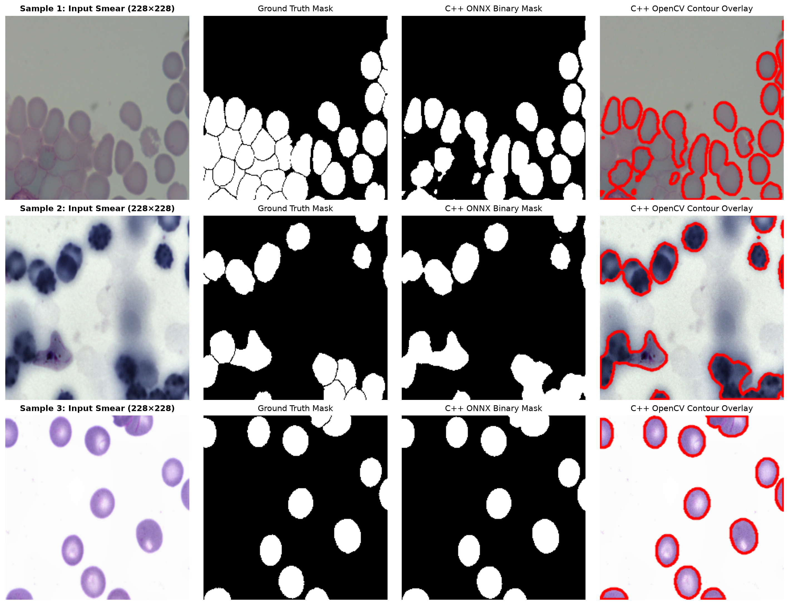

C++ ONNX Runtime Inference Engine & Project Conclusions
Production Deployment, Memory Architecture, and End-to-End Visual Verification
Author
Vision ML Project
Published
October 27, 2026
1 Overview
This final technical report documents the deployment phase of the Blood Cell Semantic Segmentation (cppy_pipeline) project: transitioning from a trained PyTorch research model (best_model.pth) to a standalone, dependency-light C++17 Inference Engine powered by ONNX Runtime and OpenCV.
2 How the C++ Inference Engine Works with ONNX Runtime
Bridging a model from Python to C++ requires coordinating graph optimizations, memory layouts, and mathematical postprocessing.
2.1 1. Static ONNX Graph & Constant Folding
When export_onnx.py exports best_model.pth in model.eval() mode with do_constant_folding=True, the exporter performs an algebraic graph transformation. In training, each DoubleConv block runs a Conv2d layer followed by BatchNorm2d:
At inference time, the running mean \(\mu\), running variance \(\sigma^2\), scale \(\gamma\), and shift \(\beta\) are fixed constants. ONNX folds them directly into the convolution kernel weights \(\mathbf{W}_{\text{fused}}\) and bias \(b_{\text{fused}}\):
When Ort::Session loads model.onnx in C++ with GraphOptimizationLevel::ORT_ENABLE_ALL, all BatchNorm2d nodes are eliminated, cutting memory bandwidth and accelerating inference. Numerical verification confirmed a maximum absolute difference of only \(2.42 \times 10^{-6}\) between PyTorch and ONNX Runtime across all \(228 \times 228\) output logits.
In SegmentationEngine::preprocess_into(), we resize the input image to \(416 \times 416\) and perform a fused single-pass BGR \(\to\) planar RGB transformation directly into a pre-allocated contiguous buffer. Instead of dynamic allocations, precomputed fused multiply-add (FMA) scaling factors apply ImageNet normalization in a single pass: \[P_{\text{norm}} = P \cdot \text{scale} + \text{bias}, \quad \text{scale} = \frac{1}{255 \cdot \sigma}, \quad \text{bias} = -\frac{\mu}{\sigma}\]
Rather than reallocating input tensors per frame, SegmentationEngine binds a persistent Ort::Value memory tensor backed by CPU arena memory directly to the session’s input and output via Ort::IoBinding:
To convert the raw output logits \(z \in (-\infty, \infty)\) of shape \([1, 1, 228, 228]\) into a binary mask at probability threshold \(p \in (0, 1)\), naive implementations evaluate the logistic sigmoid at every pixel:
\[\sigma(z) = \frac{1}{1 + e^{-z}} > p\]
Evaluating std::exp(-z) across \(228 \times 228 = 51,984\) pixels adds unnecessary CPU overhead. Because \(\sigma(z)\) is strictly monotonically increasing on \(\mathbb{R}\), we invert the inequality analytically once prior to the loop:
\[\frac{1}{1 + e^{-z}} > p \iff z > \ln\!\left(\frac{p}{1 - p}\right)\]
For our standard threshold \(p = 0.5\), \(\ln(0.5 / 0.5) = \ln(1) = 0.0\text{f}\). Thus, checking z > 0.0f produces the exact same binary mask. Furthermore, wrapping the raw logit pointer in a zero-copy cv::Mat header and invoking cv::compare(logits_mat, logit_threshold, out_binary_mask, cv::CMP_GT) thresholds all 51,984 pixels using hardware SIMD vector instructions.
3 Running C++ in Quarto: xeus-cling vs. Compiled Binary Integration
Quarto supports two ways to showcase C++ inference results:
3.1 Approach A: Interactive C++ Cells via xeus-cling
If you have the xeus-cling Jupyter kernel installed (conda install -c conda-forge xeus-cling), Quarto can execute C++17 code cells interactively by setting jupyter: xcpp17 in the YAML header and using #pragma cling directives to link libraries dynamically:
3.2 Approach B: Invoking the Compiled C++ Binary & Visualizing Outputs (Recommended)
Because xeus-cling uses an interpreted LLVM Cling JIT without full -O3 CMake link-time optimizations, running your compiled ./src/cpp/build/inference_app binary directly from Quarto (or loading its saved output images) gives true production latency measurements and works seamlessly with your standard Python Quarto kernel.
Code
import subprocessfrom pathlib import Pathimport numpy as npimport matplotlib.pyplot as pltfrom PIL import Image# Resolve project rootcwd = Path.cwd()project_root = cwd if (cwd /"data").exists() else cwd.parentcpp_binary = project_root /"src"/"cpp"/"build"/"inference_app"onnx_model = project_root /"outputs"/"model.onnx"test_orig_dir = project_root /"data"/"test"/"original"test_mask_dir = project_root /"data"/"test"/"mask"output_dir = project_root /"outputs"# Select sample test imagessample_images =sorted(list(test_orig_dir.glob("*.jpg")) +list(test_orig_dir.glob("*.png")))[:3]# Run the C++ inference binary on each sample if compiledfor idx, img_path inenumerate(sample_images): out_prefix = output_dir /f"cpp_sample_{idx+1}"if cpp_binary.exists() and onnx_model.exists(): cmd = [str(cpp_binary),"--model", str(onnx_model),"--image", str(img_path),"--output", str(out_prefix), ] res = subprocess.run(cmd, capture_output=True, text=True, check=True)print(res.stdout)
Loading ONNX model from: /home/nazhanys/Documents/Work/bcsd/outputs/model.onnx
--------------------------------------------------
C++ ONNX Runtime Inference Complete!
Execution Provider : CUDAExecutionProvider
Input Dimensions : 1944x1383
Model Target Res : 416x416
Forward Pass Latency : 51.1953 ms
Output Mask Size : 228x228
Saved Binary Mask : /home/nazhanys/Documents/Work/bcsd/outputs/cpp_sample_1_mask.png
Saved Contour Overlay: /home/nazhanys/Documents/Work/bcsd/outputs/cpp_sample_1_overlay.png
--------------------------------------------------
Loading ONNX model from: /home/nazhanys/Documents/Work/bcsd/outputs/model.onnx
--------------------------------------------------
C++ ONNX Runtime Inference Complete!
Execution Provider : CUDAExecutionProvider
Input Dimensions : 1600x1200
Model Target Res : 416x416
Forward Pass Latency : 49.6655 ms
Output Mask Size : 228x228
Saved Binary Mask : /home/nazhanys/Documents/Work/bcsd/outputs/cpp_sample_2_mask.png
Saved Contour Overlay: /home/nazhanys/Documents/Work/bcsd/outputs/cpp_sample_2_overlay.png
--------------------------------------------------
Loading ONNX model from: /home/nazhanys/Documents/Work/bcsd/outputs/model.onnx
--------------------------------------------------
C++ ONNX Runtime Inference Complete!
Execution Provider : CUDAExecutionProvider
Input Dimensions : 1600x1200
Model Target Res : 416x416
Forward Pass Latency : 49.6736 ms
Output Mask Size : 228x228
Saved Binary Mask : /home/nazhanys/Documents/Work/bcsd/outputs/cpp_sample_3_mask.png
Saved Contour Overlay: /home/nazhanys/Documents/Work/bcsd/outputs/cpp_sample_3_overlay.png
--------------------------------------------------
4 Visual Comparison: Input Blood Smear vs. C++ Inference Outputs
The figure below compares the raw input blood smear image (\(416 \times 416\) resized and center-cropped to the unpadded U-Net’s \(228 \times 228\) receptive field), the ground-truth mask, the C++ engine’s binary mask (_mask.png), and the C++ engine’s OpenCV membrane contour overlay (_overlay.png).
Figure 1: End-to-End C++ Inference Verification: Input Blood Smear, Ground Truth Mask, C++ ONNX Binary Mask, and C++ OpenCV Membrane Contour Overlay.
4.1 Static Reference Comparison
If rendering without executing the binary live, you can also embed the pre-rendered comparison figure directly in Markdown:

C++ ONNX Runtime Inference vs. Ground Truth Comparison
5 Final Project Conclusions
5.1 1. Mathematical & Architectural Takeaways
Unpadded U-Net & Skip Cropping: Building the original 2015 unpadded U-Net (padding=0) from scratch demonstrated how \(3 \times 3\) convolutions reduce spatial resolution by \(2\) pixels per layer (\(416 \times 416 \to 228 \times 228\)), requiring exact center-cropping (_center_crop) across all four skip connections and target masks.
Synergy of Combined BCE + Soft Dice Loss: Pairing nn.BCEWithLogitsLoss (using the log-sum-exp trick for floating-point stability) with differentiable Soft Dice Loss resolved foreground-to-background class imbalance, achieving a \(96.55\%\) Dice Score and \(93.44\%\) IoU on the holdout test set.
Lossless Graph Portability: Exporting to ONNX with constant folding absorbed all BatchNorm2d layers into their preceding Conv2d weights, achieving a \(2.42 \times 10^{-6}\) parity difference between Python and C++.
5.2 2. Systems & Deployment Effectiveness
Eliminating Runtime Overhead: Moving inference to C++17 with ONNX Runtime and OpenCV removes the Python interpreter and Global Interpreter Lock (GIL), allowing deterministic memory allocation and direct pointer manipulation.
Algebraic Optimization in Production: Replacing \(51,984\) per-pixel std::exp() evaluations with the monotonic logit equivalence (\(\sigma(z) > 0.5 \iff z > 0.0\text{f}\)) illustrates how simple mathematical analysis directly reduces CPU cycle counts in postprocessing.
5.3 3. Future Extensions
Multi-Class Cell Differentiation: Expand out_channels from \(1 \to 4\) (Background, RBC, WBC, Platelets) using nn.CrossEntropyLoss + Generalized Multi-Class Dice Loss.
INT8 / FP16 Quantization: Apply ONNX Runtime Post-Training Quantization (PTQ) to compress model.onnx weights from 32-bit floats to 8-bit integers, reducing model size by \(4\times\) and accelerating CPU/edge inference.
Overlap-Tile Full-Slide Inference: Implement Ronneberger’s mirror-padded overlap-tile stitching in src/cpp/ to segment arbitrary gigapixel whole-slide microscopy images seamlessly.